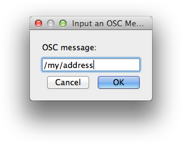

i-score allows to remotely control OSC (Open Sound Control) compatible devices (software or hardware).
Setting up your OSC compatible device
When opening a brand new i-score project, you first need to setup in i-score the OSC application you want to control. This includes setting up the in and out ports that i-score and your remote application will use for communication as well as declaring all the OSC addresses of your application’s parameters you want to control using i-score.
From the Device explorer panel, click the “Add a device” button to bring up the remote application setup window.
{kind=link}
First, select “OSC” in the protocols menu.
{kind=link}
You can then set an optional name (here we’ll use “myOSCApp”) your OSC application will be displayed under in i-score Device explorer.
Setup a destination port (that is, the port your remote application uses to receive incoming OSC messages) and, if your remote application can send out notifications at each parameter’s value change, setup a reception port (that is, the port used by your remote application to send out OSC notifications).
Then set the IP address of the computer running your OSC application and click “ok” when you are done (by default, i-score uses your local IP address).
You should now have an item called “myOSCApp” in i-score Device explorer.
{kind=link}
Adding OSC addresses
In order to control your OSC compatible application from i-score, you have to declare the OSC address of each application’s parameter you want to control. This can be done in three different ways.
Manual namespace editing
Expand your device top-level address using the arrow, then click the “Add a node” button.

You can then write your application’s parameter address in the pop-up window.

Namespace editing using learn mode
Typing all your application’s parameters addresses can be tedious, hence i-score provides a learn mode to automatically fill all of your device’s OSC addresses. Once you set up your device as explained above, toggle the check box next to your device name to activate learn mode. As an example, here, we will send two OSC messages from a Max patch:
/layer/1/alpha value
/layer/2/alpha value

The Device explorer should now display your remote application OSC addresses.

For optimization concerns, it is better to turn off the learn mode (by unchecking the check box) when done.
Loading an OSC namespace configuration file
i-score also allows to load a previously saved namespace file, that is, a file listing as a tree-like structure all addresses of your application. This can show useful when working with applications with static structures. As pointed below, we provide a set of namespace files for some applications (such as Modul8, OLA, Dlight… etc).
When creating a new device, click the “Load” button from the device configuration window and select the configuration file on your disk. Here, we’ll load the configuration file for the application modul8.
{kind=link}
When done, all of the modul8 OSC parameter described in the configuration file should appear in i-score Device explorer as show below.

Note that as of version 0.2, i-score does not allow to export your application namespace as an xml configuration file. Such file has to be done in your favorite text editor.
Also note that there is an open repository hosted on Github offering a growing list of configuration files for your use. Pull requests are also more than welcome if you want to contribute more configuration files.